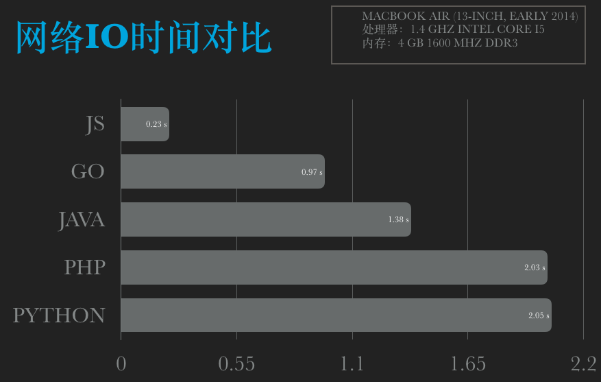

<!doctype html>
<html lang="zh-CN">
<head><meta name="generator" content="Hexo 3.9.0">
    <meta charset="UTF-8">
    <meta http-equiv="X-UA-Compatible" content="IE=11,IE=10,IE=9,IE=8">
    <meta name="baidu-site-verification" content="dIcXMeY8Ya">
    
    <title>不同语言对网络IO的效率对比 | 斯人笔记本 - IMSRY - 个人博客 原创文章 学习笔记 技术分享</title>
    <meta name="viewport" content="width=device-width, initial-scale=1, maximum-scale=1, user-scalable=0">
    <meta name="keywords" content="Anthony, 刘经济, 技术博客, 个人博客, PHP, Golang, Linux, FullStack">
    <meta name="description" content="待人以儒墨，不热爱前端技术的后端开发不是一个好的吃货。">

    
    <link rel="alternative" href="/atom.xml" title="斯人笔记本" type="application/atom+xml">
    
    
    <link rel="shortcut icon" href="/favicon.ico">
    
    <link rel="stylesheet" href="/css/style.css">
    <!--[if lt IE 9]>
    <script src="/js/html5.js"></script>
    <![endif]-->
    
<script>
var _hmt = _hmt || [];
(function() {
  var hm = document.createElement("script");
  hm.src = "https://hm.baidu.com/hm.js?d5ebf515ab530cfbdda5f5c85093fb41";
  var s = document.getElementsByTagName("script")[0]; 
  s.parentNode.insertBefore(hm, s);
})();
</script>


</head>
</html>
<body class="home">
    <!--[if lt IE 9]>
    <div class="browsehappy">
        当前网页 <strong>不支持</strong>
        你正在使用的浏览器. 为了正常的访问, 请 <a href="http://browsehappy.com/">升级你的浏览器</a>.
    </div>
    <![endif]-->

    <!-- 博客头部 -->
    <header class="header">
    <section class="container header-main">
        <div class="logo">
            <a href="/">
                <div class="cover">
                    <span class="name">斯人笔记本</span>
                    <span class="description">IMSRY</span>
                </div>
            </a>
        </div>
        <div class="dropnav icon-paragraph-justify" id="JELON__btnDropNav"></div>
        <ul class="menu hidden" id="JELON__menu">
            
            <li rel="/posts/55e3ba30.html" class="item ">
                <a href="/" title="首页" class="icon-home">&nbsp;首页</a>
            </li>
            
            <li rel="/posts/55e3ba30.html" class="item ">
                <a href="/about/" title="关于" class="icon-about">&nbsp;关于</a>
            </li>
            
            <li rel="/posts/55e3ba30.html" class="item ">
                <a href="/comment/" title="留言" class="icon-comment">&nbsp;留言</a>
            </li>
            
        </ul>
        <div class="profile clearfix">
            <div class="feeds fl">
                
                
                <p class="links">
                    
                        <a href="https://github.com/haowanxing" target="_blank">Github</a>
                        |
                    
                </p>
                <p class="sns">
                    
                        <a href="http://weibo.com/u/2214092525" class="sinaweibo" target="_blank"><b>■</b> 新浪微博</a>
                    
                        <a href="https://www.facebook.com/imsry.cn/" class="qqweibo" target="_blank"><b>■</b> Facebook</a>
                    
                    <a href="javascript: void(0);" class="wechat">
                        <b>■</b>
                        公众号
                        <span class="popover">
                            
                            <i class="arrow"></i>
                        </span>
                    </a>
                </p>
                
            </div>
            <div class="avatar fr">
                
            </div>
        </div>
    </section>
</header>


    <!-- 博客正文 -->
    <div class="container body clearfix">
        <section class="content">
            <div class="content-main widget">
                <!-- 文章页 -->
<!-- 文章 -->
<article class="post article">
    <header class="text-center">
        <h3 class="post-title"><span>不同语言对网络IO的效率对比</span></h3>
    </header>
    <p class="post-meta text-center">
         发表于
        <time datetime="2018-08-21T09:07:37.000Z">2018-08-21 17:07:37</time>

        <!-- 不蒜子统计 -->
        <span id="busuanzi_container_page_pv" style='display:none'">
              <i class="icon-smile icon"></i> 阅读数：<span id="busuanzi_value_page_pv"></span>次
        </span>


    </p>
    <div class="post-content">
        <p></p>
<p>测试机器配置：</p>
<ul>
<li>MacBook Air (13-inch, Early 2014)</li>
<li>处理器：1.4 GHz Intel Core i5</li>
<li>内存：4 GB 1600 MHz DDR3</li>
</ul>
<a id="more"></a>
<h2 id="PHP"><a href="#PHP" class="headerlink" title="PHP"></a>PHP</h2><figure class="highlight plain"><table><tr><td class="gutter"><pre><span class="line">1</span><br><span class="line">2</span><br><span class="line">3</span><br></pre></td><td class="code"><pre><span class="line">PHP 7.1.16 (cli) (built: Mar 31 2018 02:59:59) ( NTS )</span><br><span class="line">Copyright (c) 1997-2018 The PHP Group</span><br><span class="line">Zend Engine v3.1.0, Copyright (c) 1998-2018 Zend Technologies</span><br></pre></td></tr></table></figure>
<figure class="highlight php"><table><tr><td class="gutter"><pre><span class="line">1</span><br><span class="line">2</span><br><span class="line">3</span><br><span class="line">4</span><br><span class="line">5</span><br><span class="line">6</span><br><span class="line">7</span><br><span class="line">8</span><br><span class="line">9</span><br><span class="line">10</span><br><span class="line">11</span><br><span class="line">12</span><br><span class="line">13</span><br><span class="line">14</span><br></pre></td><td class="code"><pre><span class="line"><span class="meta">&lt;?php</span></span><br><span class="line">$t1 = microtime(<span class="keyword">true</span>);  </span><br><span class="line">  </span><br><span class="line"><span class="keyword">for</span>($i=<span class="number">0</span>; $i&lt;<span class="number">20</span>; $i++)&#123;  </span><br><span class="line">    $url = <span class="string">"http://2018.ip138.com/ic.asp?count="</span>.$i;</span><br><span class="line">    $data = file_get_contents($url);</span><br><span class="line">    <span class="comment">// echo 'get:'.$i." ".$data."\r\n";</span></span><br><span class="line">&#125;  </span><br><span class="line">  </span><br><span class="line">$t2 = microtime(<span class="keyword">true</span>);  </span><br><span class="line">  </span><br><span class="line"><span class="keyword">echo</span> <span class="string">'php time:'</span> . ($t2 - $t1)*<span class="number">1000</span> . <span class="string">"ms\n"</span>;  </span><br><span class="line"> </span><br><span class="line"><span class="meta">?&gt;</span></span><br></pre></td></tr></table></figure>
<p>测试结果：</p>
<figure class="highlight bash"><table><tr><td class="gutter"><pre><span class="line">1</span><br><span class="line">2</span><br><span class="line">3</span><br><span class="line">4</span><br><span class="line">5</span><br><span class="line">6</span><br><span class="line">7</span><br><span class="line">8</span><br><span class="line">9</span><br><span class="line">10</span><br><span class="line">11</span><br><span class="line">12</span><br><span class="line">13</span><br><span class="line">14</span><br></pre></td><td class="code"><pre><span class="line">~/Sites/languageDiff/io » php main.php</span><br><span class="line">php time:2112.9629611969ms</span><br><span class="line">-------------------------------------------------------</span><br><span class="line">~/Sites/languageDiff/io » php main.php</span><br><span class="line">php time:1960.746049881ms</span><br><span class="line">-------------------------------------------------------</span><br><span class="line">~/Sites/languageDiff/io » php main.php</span><br><span class="line">php time:2055.7940006256ms</span><br><span class="line">-------------------------------------------------------</span><br><span class="line">~/Sites/languageDiff/io » php main.php</span><br><span class="line">php time:2052.6430606842ms</span><br><span class="line">-------------------------------------------------------</span><br><span class="line">~/Sites/languageDiff/io » php main.php</span><br><span class="line">php time:1990.2958869934ms</span><br></pre></td></tr></table></figure>
<h2 id="Java"><a href="#Java" class="headerlink" title="Java"></a>Java</h2><figure class="highlight plain"><table><tr><td class="gutter"><pre><span class="line">1</span><br><span class="line">2</span><br><span class="line">3</span><br></pre></td><td class="code"><pre><span class="line">java version &quot;10.0.1&quot; 2018-04-17</span><br><span class="line">Java(TM) SE Runtime Environment 18.3 (build 10.0.1+10)</span><br><span class="line">Java HotSpot(TM) 64-Bit Server VM 18.3 (build 10.0.1+10, mixed mode)</span><br></pre></td></tr></table></figure>
<figure class="highlight java"><table><tr><td class="gutter"><pre><span class="line">1</span><br><span class="line">2</span><br><span class="line">3</span><br><span class="line">4</span><br><span class="line">5</span><br><span class="line">6</span><br><span class="line">7</span><br><span class="line">8</span><br><span class="line">9</span><br><span class="line">10</span><br><span class="line">11</span><br><span class="line">12</span><br><span class="line">13</span><br><span class="line">14</span><br><span class="line">15</span><br></pre></td><td class="code"><pre><span class="line"><span class="keyword">public</span> <span class="class"><span class="keyword">class</span> <span class="title">Main</span> </span>&#123;</span><br><span class="line"> </span><br><span class="line">    <span class="function"><span class="keyword">public</span> <span class="keyword">static</span> <span class="keyword">void</span> <span class="title">main</span><span class="params">(String[] args)</span> </span>&#123;</span><br><span class="line">        <span class="keyword">long</span> t1 = System.currentTimeMillis();</span><br><span class="line">          </span><br><span class="line">        <span class="keyword">for</span>(<span class="keyword">int</span> i=<span class="number">0</span>; i&lt;<span class="number">20</span>; i++)&#123;</span><br><span class="line">            String s=HttpRequest.sendGet(<span class="string">"http://2018.ip138.com/ic.asp"</span>, <span class="string">"count="</span>+i);</span><br><span class="line">            <span class="comment">// System.out.println(""+i+" : "+s);</span></span><br><span class="line">        &#125;  </span><br><span class="line">          </span><br><span class="line">        <span class="keyword">long</span> t2 = System.currentTimeMillis();</span><br><span class="line">          </span><br><span class="line">        System.out.println(<span class="string">"java time: "</span> + String.valueOf(t2 - t1) + <span class="string">"ms"</span>);</span><br><span class="line">    &#125;</span><br><span class="line">&#125;</span><br></pre></td></tr></table></figure>
<p><em>HttpRequst.java</em> CodeOrigin:<a href="https://www.cnblogs.com/guoyinli/p/7192839.html" target="_blank" rel="noopener">https://www.cnblogs.com/guoyinli/p/7192839.html</a></p>
<figure class="highlight java"><table><tr><td class="gutter"><pre><span class="line">1</span><br><span class="line">2</span><br><span class="line">3</span><br><span class="line">4</span><br><span class="line">5</span><br><span class="line">6</span><br><span class="line">7</span><br><span class="line">8</span><br><span class="line">9</span><br><span class="line">10</span><br><span class="line">11</span><br><span class="line">12</span><br><span class="line">13</span><br><span class="line">14</span><br><span class="line">15</span><br><span class="line">16</span><br><span class="line">17</span><br><span class="line">18</span><br><span class="line">19</span><br><span class="line">20</span><br><span class="line">21</span><br><span class="line">22</span><br><span class="line">23</span><br><span class="line">24</span><br><span class="line">25</span><br><span class="line">26</span><br><span class="line">27</span><br><span class="line">28</span><br><span class="line">29</span><br><span class="line">30</span><br><span class="line">31</span><br><span class="line">32</span><br><span class="line">33</span><br><span class="line">34</span><br><span class="line">35</span><br><span class="line">36</span><br><span class="line">37</span><br><span class="line">38</span><br><span class="line">39</span><br><span class="line">40</span><br><span class="line">41</span><br><span class="line">42</span><br><span class="line">43</span><br><span class="line">44</span><br><span class="line">45</span><br><span class="line">46</span><br><span class="line">47</span><br><span class="line">48</span><br><span class="line">49</span><br><span class="line">50</span><br><span class="line">51</span><br><span class="line">52</span><br><span class="line">53</span><br><span class="line">54</span><br><span class="line">55</span><br><span class="line">56</span><br><span class="line">57</span><br><span class="line">58</span><br><span class="line">59</span><br><span class="line">60</span><br><span class="line">61</span><br><span class="line">62</span><br><span class="line">63</span><br><span class="line">64</span><br><span class="line">65</span><br><span class="line">66</span><br><span class="line">67</span><br><span class="line">68</span><br><span class="line">69</span><br><span class="line">70</span><br><span class="line">71</span><br><span class="line">72</span><br><span class="line">73</span><br><span class="line">74</span><br><span class="line">75</span><br><span class="line">76</span><br><span class="line">77</span><br><span class="line">78</span><br><span class="line">79</span><br><span class="line">80</span><br><span class="line">81</span><br><span class="line">82</span><br><span class="line">83</span><br><span class="line">84</span><br><span class="line">85</span><br><span class="line">86</span><br><span class="line">87</span><br><span class="line">88</span><br><span class="line">89</span><br><span class="line">90</span><br><span class="line">91</span><br><span class="line">92</span><br><span class="line">93</span><br><span class="line">94</span><br><span class="line">95</span><br><span class="line">96</span><br><span class="line">97</span><br><span class="line">98</span><br><span class="line">99</span><br><span class="line">100</span><br><span class="line">101</span><br><span class="line">102</span><br><span class="line">103</span><br><span class="line">104</span><br><span class="line">105</span><br><span class="line">106</span><br><span class="line">107</span><br><span class="line">108</span><br><span class="line">109</span><br><span class="line">110</span><br><span class="line">111</span><br><span class="line">112</span><br><span class="line">113</span><br><span class="line">114</span><br><span class="line">115</span><br><span class="line">116</span><br><span class="line">117</span><br><span class="line">118</span><br><span class="line">119</span><br><span class="line">120</span><br><span class="line">121</span><br><span class="line">122</span><br><span class="line">123</span><br><span class="line">124</span><br></pre></td><td class="code"><pre><span class="line"></span><br><span class="line"><span class="keyword">import</span> java.io.BufferedReader;</span><br><span class="line"><span class="keyword">import</span> java.io.IOException;</span><br><span class="line"><span class="keyword">import</span> java.io.InputStreamReader;</span><br><span class="line"><span class="keyword">import</span> java.io.PrintWriter;</span><br><span class="line"><span class="keyword">import</span> java.net.URL;</span><br><span class="line"><span class="keyword">import</span> java.net.URLConnection;</span><br><span class="line"><span class="keyword">import</span> java.util.List;</span><br><span class="line"><span class="keyword">import</span> java.util.Map;</span><br><span class="line"></span><br><span class="line"><span class="keyword">public</span> <span class="class"><span class="keyword">class</span> <span class="title">HttpRequest</span> </span>&#123;</span><br><span class="line">    <span class="comment">/**</span></span><br><span class="line"><span class="comment">     * 向指定URL发送GET方法的请求</span></span><br><span class="line"><span class="comment">     * </span></span><br><span class="line"><span class="comment">     * <span class="doctag">@param</span> url</span></span><br><span class="line"><span class="comment">     *            发送请求的URL</span></span><br><span class="line"><span class="comment">     * <span class="doctag">@param</span> param</span></span><br><span class="line"><span class="comment">     *            请求参数，请求参数应该是 name1=value1&amp;name2=value2 的形式。</span></span><br><span class="line"><span class="comment">     * <span class="doctag">@return</span> URL 所代表远程资源的响应结果</span></span><br><span class="line"><span class="comment">     */</span></span><br><span class="line">    <span class="function"><span class="keyword">public</span> <span class="keyword">static</span> String <span class="title">sendGet</span><span class="params">(String url, String param)</span> </span>&#123;</span><br><span class="line">        String result = <span class="string">""</span>;</span><br><span class="line">        BufferedReader in = <span class="keyword">null</span>;</span><br><span class="line">        <span class="keyword">try</span> &#123;</span><br><span class="line">            String urlNameString = url + <span class="string">"?"</span> + param;</span><br><span class="line">            URL realUrl = <span class="keyword">new</span> URL(urlNameString);</span><br><span class="line">            <span class="comment">// 打开和URL之间的连接</span></span><br><span class="line">            URLConnection connection = realUrl.openConnection();</span><br><span class="line">            <span class="comment">// 设置通用的请求属性</span></span><br><span class="line">            connection.setRequestProperty(<span class="string">"accept"</span>, <span class="string">"*/*"</span>);</span><br><span class="line">            connection.setRequestProperty(<span class="string">"connection"</span>, <span class="string">"Keep-Alive"</span>);</span><br><span class="line">            connection.setRequestProperty(<span class="string">"user-agent"</span>,</span><br><span class="line">                    <span class="string">"Mozilla/4.0 (compatible; MSIE 6.0; Windows NT 5.1;SV1)"</span>);</span><br><span class="line">            <span class="comment">// 建立实际的连接</span></span><br><span class="line">            connection.connect();</span><br><span class="line">            <span class="comment">// 获取所有响应头字段</span></span><br><span class="line">            Map&lt;String, List&lt;String&gt;&gt; map = connection.getHeaderFields();</span><br><span class="line">            <span class="comment">// 遍历所有的响应头字段</span></span><br><span class="line">            <span class="comment">/*for (String key : map.keySet()) &#123;</span></span><br><span class="line"><span class="comment">                System.out.println(key + "---&gt;" + map.get(key));</span></span><br><span class="line"><span class="comment">            &#125;*/</span></span><br><span class="line">            <span class="comment">// 定义 BufferedReader输入流来读取URL的响应</span></span><br><span class="line">            in = <span class="keyword">new</span> BufferedReader(<span class="keyword">new</span> InputStreamReader(</span><br><span class="line">                    connection.getInputStream()));</span><br><span class="line">            String line;</span><br><span class="line">            <span class="keyword">while</span> ((line = in.readLine()) != <span class="keyword">null</span>) &#123;</span><br><span class="line">                result += line;</span><br><span class="line">            &#125;</span><br><span class="line">        &#125; <span class="keyword">catch</span> (Exception e) &#123;</span><br><span class="line">            System.out.println(<span class="string">"发送GET请求出现异常！"</span> + e);</span><br><span class="line">            e.printStackTrace();</span><br><span class="line">        &#125;</span><br><span class="line">        <span class="comment">// 使用finally块来关闭输入流</span></span><br><span class="line">        <span class="keyword">finally</span> &#123;</span><br><span class="line">            <span class="keyword">try</span> &#123;</span><br><span class="line">                <span class="keyword">if</span> (in != <span class="keyword">null</span>) &#123;</span><br><span class="line">                    in.close();</span><br><span class="line">                &#125;</span><br><span class="line">            &#125; <span class="keyword">catch</span> (Exception e2) &#123;</span><br><span class="line">                e2.printStackTrace();</span><br><span class="line">            &#125;</span><br><span class="line">        &#125;</span><br><span class="line">        <span class="keyword">return</span> result;</span><br><span class="line">    &#125;</span><br><span class="line"></span><br><span class="line">    <span class="comment">/**</span></span><br><span class="line"><span class="comment">     * 向指定 URL 发送POST方法的请求</span></span><br><span class="line"><span class="comment">     * </span></span><br><span class="line"><span class="comment">     * <span class="doctag">@param</span> url</span></span><br><span class="line"><span class="comment">     *            发送请求的 URL</span></span><br><span class="line"><span class="comment">     * <span class="doctag">@param</span> param</span></span><br><span class="line"><span class="comment">     *            请求参数，请求参数应该是 name1=value1&amp;name2=value2 的形式。</span></span><br><span class="line"><span class="comment">     * <span class="doctag">@return</span> 所代表远程资源的响应结果</span></span><br><span class="line"><span class="comment">     */</span></span><br><span class="line">    <span class="function"><span class="keyword">public</span> <span class="keyword">static</span> String <span class="title">sendPost</span><span class="params">(String url, String param)</span> </span>&#123;</span><br><span class="line">        PrintWriter out = <span class="keyword">null</span>;</span><br><span class="line">        BufferedReader in = <span class="keyword">null</span>;</span><br><span class="line">        String result = <span class="string">""</span>;</span><br><span class="line">        <span class="keyword">try</span> &#123;</span><br><span class="line">            URL realUrl = <span class="keyword">new</span> URL(url);</span><br><span class="line">            <span class="comment">// 打开和URL之间的连接</span></span><br><span class="line">            URLConnection conn = realUrl.openConnection();</span><br><span class="line">            <span class="comment">// 设置通用的请求属性</span></span><br><span class="line">            conn.setRequestProperty(<span class="string">"accept"</span>, <span class="string">"*/*"</span>);</span><br><span class="line">            conn.setRequestProperty(<span class="string">"connection"</span>, <span class="string">"Keep-Alive"</span>);</span><br><span class="line">            conn.setRequestProperty(<span class="string">"user-agent"</span>,</span><br><span class="line">                    <span class="string">"Mozilla/4.0 (compatible; MSIE 6.0; Windows NT 5.1;SV1)"</span>);</span><br><span class="line">            <span class="comment">// 发送POST请求必须设置如下两行</span></span><br><span class="line">            conn.setDoOutput(<span class="keyword">true</span>);</span><br><span class="line">            conn.setDoInput(<span class="keyword">true</span>);</span><br><span class="line">            <span class="comment">// 获取URLConnection对象对应的输出流</span></span><br><span class="line">            out = <span class="keyword">new</span> PrintWriter(conn.getOutputStream());</span><br><span class="line">            <span class="comment">// 发送请求参数</span></span><br><span class="line">            out.print(param);</span><br><span class="line">            <span class="comment">// flush输出流的缓冲</span></span><br><span class="line">            out.flush();</span><br><span class="line">            <span class="comment">// 定义BufferedReader输入流来读取URL的响应</span></span><br><span class="line">            in = <span class="keyword">new</span> BufferedReader(</span><br><span class="line">                    <span class="keyword">new</span> InputStreamReader(conn.getInputStream()));</span><br><span class="line">            String line;</span><br><span class="line">            <span class="keyword">while</span> ((line = in.readLine()) != <span class="keyword">null</span>) &#123;</span><br><span class="line">                result += line;</span><br><span class="line">            &#125;</span><br><span class="line">        &#125; <span class="keyword">catch</span> (Exception e) &#123;</span><br><span class="line">            System.out.println(<span class="string">"发送 POST 请求出现异常！"</span>+e);</span><br><span class="line">            e.printStackTrace();</span><br><span class="line">        &#125;</span><br><span class="line">        <span class="comment">//使用finally块来关闭输出流、输入流</span></span><br><span class="line">        <span class="keyword">finally</span>&#123;</span><br><span class="line">            <span class="keyword">try</span>&#123;</span><br><span class="line">                <span class="keyword">if</span>(out!=<span class="keyword">null</span>)&#123;</span><br><span class="line">                    out.close();</span><br><span class="line">                &#125;</span><br><span class="line">                <span class="keyword">if</span>(in!=<span class="keyword">null</span>)&#123;</span><br><span class="line">                    in.close();</span><br><span class="line">                &#125;</span><br><span class="line">            &#125;</span><br><span class="line">            <span class="keyword">catch</span>(IOException ex)&#123;</span><br><span class="line">                ex.printStackTrace();</span><br><span class="line">            &#125;</span><br><span class="line">        &#125;</span><br><span class="line">        <span class="keyword">return</span> result;</span><br><span class="line">    &#125;    </span><br><span class="line">&#125;</span><br></pre></td></tr></table></figure>
<p>测试结果：</p>
<figure class="highlight bash"><table><tr><td class="gutter"><pre><span class="line">1</span><br><span class="line">2</span><br><span class="line">3</span><br><span class="line">4</span><br><span class="line">5</span><br><span class="line">6</span><br><span class="line">7</span><br><span class="line">8</span><br><span class="line">9</span><br><span class="line">10</span><br><span class="line">11</span><br><span class="line">12</span><br><span class="line">13</span><br><span class="line">14</span><br></pre></td><td class="code"><pre><span class="line">~/Sites/languageDiff/io » java Main</span><br><span class="line">java time: 1416ms</span><br><span class="line">-------------------------------------------------------</span><br><span class="line">~/Sites/languageDiff/io » java Main</span><br><span class="line">java time: 1472ms</span><br><span class="line">-------------------------------------------------------</span><br><span class="line">~/Sites/languageDiff/io » java Main</span><br><span class="line">java time: 1328ms</span><br><span class="line">-------------------------------------------------------</span><br><span class="line">~/Sites/languageDiff/io » java Main</span><br><span class="line">java time: 1348ms</span><br><span class="line">-------------------------------------------------------</span><br><span class="line">~/Sites/languageDiff/io » java Main</span><br><span class="line">java time: 1336ms</span><br></pre></td></tr></table></figure>
<h2 id="Go"><a href="#Go" class="headerlink" title="Go"></a>Go</h2><figure class="highlight plain"><table><tr><td class="gutter"><pre><span class="line">1</span><br></pre></td><td class="code"><pre><span class="line">go version go1.10.3 darwin/amd64</span><br></pre></td></tr></table></figure>
<figure class="highlight go"><table><tr><td class="gutter"><pre><span class="line">1</span><br><span class="line">2</span><br><span class="line">3</span><br><span class="line">4</span><br><span class="line">5</span><br><span class="line">6</span><br><span class="line">7</span><br><span class="line">8</span><br><span class="line">9</span><br><span class="line">10</span><br><span class="line">11</span><br><span class="line">12</span><br><span class="line">13</span><br><span class="line">14</span><br><span class="line">15</span><br><span class="line">16</span><br><span class="line">17</span><br><span class="line">18</span><br><span class="line">19</span><br><span class="line">20</span><br><span class="line">21</span><br><span class="line">22</span><br><span class="line">23</span><br><span class="line">24</span><br><span class="line">25</span><br><span class="line">26</span><br><span class="line">27</span><br><span class="line">28</span><br><span class="line">29</span><br><span class="line">30</span><br><span class="line">31</span><br><span class="line">32</span><br><span class="line">33</span><br><span class="line">34</span><br><span class="line">35</span><br><span class="line">36</span><br><span class="line">37</span><br><span class="line">38</span><br><span class="line">39</span><br></pre></td><td class="code"><pre><span class="line"><span class="keyword">package</span> main</span><br><span class="line"></span><br><span class="line"><span class="keyword">import</span> (</span><br><span class="line">	<span class="string">"fmt"</span></span><br><span class="line">	<span class="string">"io/ioutil"</span></span><br><span class="line">	<span class="string">"net/http"</span></span><br><span class="line">	<span class="string">"strconv"</span></span><br><span class="line">	<span class="string">"sync"</span></span><br><span class="line">	<span class="string">"time"</span></span><br><span class="line">)</span><br><span class="line"></span><br><span class="line"><span class="function"><span class="keyword">func</span> <span class="title">main</span><span class="params">()</span></span> &#123;</span><br><span class="line">	wg := sync.WaitGroup&#123;&#125;</span><br><span class="line">	start := time.Now()</span><br><span class="line">	<span class="keyword">for</span> k := <span class="number">0</span>; k &lt; <span class="number">2</span>; k++ &#123;</span><br><span class="line">		wg.Add(<span class="number">1</span>)</span><br><span class="line">		<span class="keyword">go</span> <span class="function"><span class="keyword">func</span><span class="params">(k <span class="keyword">int</span>)</span></span> &#123;</span><br><span class="line">			<span class="keyword">for</span> i := <span class="number">0</span>; i &lt; <span class="number">10</span>; i++ &#123;</span><br><span class="line">				HttpGet(<span class="string">"http://2018.ip138.com/ic.asp?count="</span> + strconv.Itoa(i*<span class="number">2</span>+k))</span><br><span class="line">			&#125;</span><br><span class="line">			wg.Done()</span><br><span class="line">		&#125;(k)</span><br><span class="line">	&#125;</span><br><span class="line">	wg.Wait()</span><br><span class="line">	fmt.Printf(<span class="string">"cost time: %f\n"</span>, time.Now().Sub(start).Seconds())</span><br><span class="line">&#125;</span><br><span class="line"></span><br><span class="line"><span class="function"><span class="keyword">func</span> <span class="title">HttpGet</span><span class="params">(url <span class="keyword">string</span>)</span> <span class="title">string</span></span> &#123;</span><br><span class="line">	resp, err := http.Get(url)</span><br><span class="line">	<span class="keyword">if</span> err != <span class="literal">nil</span> &#123;</span><br><span class="line">		<span class="keyword">return</span> err.Error()</span><br><span class="line">	&#125;</span><br><span class="line">	<span class="keyword">defer</span> resp.Body.Close()</span><br><span class="line">	body, err := ioutil.ReadAll(resp.Body)</span><br><span class="line">	<span class="keyword">if</span> err != <span class="literal">nil</span> &#123;</span><br><span class="line">		<span class="keyword">return</span> err.Error()</span><br><span class="line">	&#125;</span><br><span class="line">	<span class="keyword">return</span> <span class="keyword">string</span>(body)</span><br><span class="line">&#125;</span><br></pre></td></tr></table></figure>
<p>测试结果：</p>
<figure class="highlight bash"><table><tr><td class="gutter"><pre><span class="line">1</span><br><span class="line">2</span><br><span class="line">3</span><br><span class="line">4</span><br><span class="line">5</span><br><span class="line">6</span><br><span class="line">7</span><br><span class="line">8</span><br><span class="line">9</span><br><span class="line">10</span><br><span class="line">11</span><br><span class="line">12</span><br><span class="line">13</span><br><span class="line">14</span><br></pre></td><td class="code"><pre><span class="line">~/Workspaces/go » go run main.go</span><br><span class="line">cost time: 0.952737</span><br><span class="line">-------------------------------------------------------</span><br><span class="line">~/Workspaces/go » go run main.go</span><br><span class="line">cost time: 0.983901</span><br><span class="line">-------------------------------------------------------</span><br><span class="line">~/Workspaces/go » go run main.go</span><br><span class="line">cost time: 0.967799</span><br><span class="line">-------------------------------------------------------</span><br><span class="line">~/Workspaces/go » go run main.go</span><br><span class="line">cost time: 0.972302</span><br><span class="line">-------------------------------------------------------</span><br><span class="line">~/Workspaces/go » go run main.go</span><br><span class="line">cost time: 0.980509</span><br></pre></td></tr></table></figure>
<h2 id="JavaScript-NodeJS"><a href="#JavaScript-NodeJS" class="headerlink" title="JavaScript(NodeJS)"></a>JavaScript(NodeJS)</h2><figure class="highlight plain"><table><tr><td class="gutter"><pre><span class="line">1</span><br><span class="line">2</span><br></pre></td><td class="code"><pre><span class="line">~/Sites » node -v</span><br><span class="line">v9.11.1</span><br></pre></td></tr></table></figure>
<figure class="highlight javascript"><table><tr><td class="gutter"><pre><span class="line">1</span><br><span class="line">2</span><br><span class="line">3</span><br><span class="line">4</span><br><span class="line">5</span><br><span class="line">6</span><br><span class="line">7</span><br><span class="line">8</span><br><span class="line">9</span><br><span class="line">10</span><br><span class="line">11</span><br><span class="line">12</span><br><span class="line">13</span><br><span class="line">14</span><br><span class="line">15</span><br><span class="line">16</span><br><span class="line">17</span><br><span class="line">18</span><br><span class="line">19</span><br><span class="line">20</span><br><span class="line">21</span><br><span class="line">22</span><br><span class="line">23</span><br><span class="line">24</span><br><span class="line">25</span><br><span class="line">26</span><br><span class="line">27</span><br><span class="line">28</span><br><span class="line">29</span><br><span class="line">30</span><br></pre></td><td class="code"><pre><span class="line"><span class="keyword">var</span> t1 = (<span class="keyword">new</span> <span class="built_in">Date</span>()).getTime();  </span><br><span class="line"><span class="keyword">var</span> job = <span class="number">0</span>;</span><br><span class="line"><span class="keyword">for</span>(<span class="keyword">var</span> i=<span class="number">0</span>; i&lt;<span class="number">20</span>; i++)&#123;  </span><br><span class="line">    get(i);  </span><br><span class="line">&#125;  </span><br><span class="line">  </span><br><span class="line"><span class="keyword">var</span> t2 = (<span class="keyword">new</span> <span class="built_in">Date</span>()).getTime();  </span><br><span class="line">  </span><br><span class="line"><span class="built_in">console</span>.log(<span class="string">"nodejs time："</span> + (t2 - t1) + <span class="string">"ms"</span>);  </span><br><span class="line">      </span><br><span class="line"></span><br><span class="line"><span class="function"><span class="keyword">function</span> <span class="title">get</span>(<span class="params">i</span>)</span>&#123;</span><br><span class="line"></span><br><span class="line"><span class="keyword">var</span> http=<span class="built_in">require</span>(<span class="string">'http'</span>);</span><br><span class="line">    <span class="comment">//get 请求外网</span></span><br><span class="line">    http.get(<span class="string">'http://2018.ip138.com/ic.asp?count='</span>+i,<span class="function"><span class="keyword">function</span>(<span class="params">req,res</span>)</span>&#123;</span><br><span class="line">        <span class="keyword">var</span> html=<span class="string">''</span>;</span><br><span class="line">        req.on(<span class="string">'data'</span>,<span class="function"><span class="keyword">function</span>(<span class="params">data</span>)</span>&#123;</span><br><span class="line">            html+=data;</span><br><span class="line">        &#125;);</span><br><span class="line">        req.on(<span class="string">'end'</span>,<span class="function"><span class="keyword">function</span>(<span class="params"></span>)</span>&#123;</span><br><span class="line">            job++</span><br><span class="line">            <span class="comment">// console.info(html);</span></span><br><span class="line">            <span class="keyword">if</span>(job == <span class="number">20</span>)&#123;</span><br><span class="line">                <span class="keyword">var</span> t2 = (<span class="keyword">new</span> <span class="built_in">Date</span>()).getTime();  </span><br><span class="line">                <span class="built_in">console</span>.log(<span class="string">"finished time："</span> + (t2 - t1) + <span class="string">"ms"</span>);  </span><br><span class="line">            &#125;</span><br><span class="line">        &#125;);</span><br><span class="line">    &#125;);</span><br><span class="line">&#125;</span><br></pre></td></tr></table></figure>
<p>测试结果：</p>
<figure class="highlight bash"><table><tr><td class="gutter"><pre><span class="line">1</span><br><span class="line">2</span><br><span class="line">3</span><br><span class="line">4</span><br><span class="line">5</span><br><span class="line">6</span><br><span class="line">7</span><br><span class="line">8</span><br><span class="line">9</span><br><span class="line">10</span><br><span class="line">11</span><br><span class="line">12</span><br><span class="line">13</span><br><span class="line">14</span><br><span class="line">15</span><br><span class="line">16</span><br><span class="line">17</span><br><span class="line">18</span><br><span class="line">19</span><br></pre></td><td class="code"><pre><span class="line">~/Sites/languageDiff/io » node main.js</span><br><span class="line">nodejs time：25ms</span><br><span class="line">finished time：236ms</span><br><span class="line">-------------------------------------------------------</span><br><span class="line">~/Sites/languageDiff/io » node main.js</span><br><span class="line">nodejs time：21ms</span><br><span class="line">finished time：220ms</span><br><span class="line">-------------------------------------------------------</span><br><span class="line">~/Sites/languageDiff/io » node main.js</span><br><span class="line">nodejs time：22ms</span><br><span class="line">finished time：230ms</span><br><span class="line">-------------------------------------------------------</span><br><span class="line">~/Sites/languageDiff/io » node main.js</span><br><span class="line">nodejs time：21ms</span><br><span class="line">finished time：227ms</span><br><span class="line">-------------------------------------------------------</span><br><span class="line">~/Sites/languageDiff/io » node main.js</span><br><span class="line">nodejs time：20ms</span><br><span class="line">finished time：221ms</span><br></pre></td></tr></table></figure>
<h2 id="Python"><a href="#Python" class="headerlink" title="Python"></a>Python</h2><figure class="highlight plain"><table><tr><td class="gutter"><pre><span class="line">1</span><br><span class="line">2</span><br></pre></td><td class="code"><pre><span class="line">~/Sites » python -V</span><br><span class="line">Python 2.7.10</span><br></pre></td></tr></table></figure>
<figure class="highlight python"><table><tr><td class="gutter"><pre><span class="line">1</span><br><span class="line">2</span><br><span class="line">3</span><br><span class="line">4</span><br><span class="line">5</span><br><span class="line">6</span><br><span class="line">7</span><br><span class="line">8</span><br><span class="line">9</span><br><span class="line">10</span><br><span class="line">11</span><br><span class="line">12</span><br><span class="line">13</span><br><span class="line">14</span><br><span class="line">15</span><br><span class="line">16</span><br><span class="line">17</span><br><span class="line">18</span><br></pre></td><td class="code"><pre><span class="line"><span class="keyword">import</span> time,urllib2</span><br><span class="line"> </span><br><span class="line"><span class="function"><span class="keyword">def</span> <span class="title">get</span><span class="params">(url)</span>:</span></span><br><span class="line">	req = urllib2.Request(url)</span><br><span class="line"></span><br><span class="line">	res_data = urllib2.urlopen(req)</span><br><span class="line">	res = res_data.read()</span><br><span class="line">	<span class="keyword">return</span> res</span><br><span class="line"> </span><br><span class="line"> </span><br><span class="line">t = time.time()</span><br><span class="line"> </span><br><span class="line"><span class="keyword">for</span> i <span class="keyword">in</span> xrange(<span class="number">0</span>, <span class="number">20</span>):</span><br><span class="line">	<span class="comment"># print "Get("+str(i)+"):"</span></span><br><span class="line">	data = get(<span class="string">"http://2018.ip138.com/ic.asp?count="</span>+str(i))</span><br><span class="line">	<span class="comment"># print data</span></span><br><span class="line"> </span><br><span class="line"><span class="keyword">print</span> <span class="string">'Python time: %.02fs'</span> % (time.time() - t)</span><br></pre></td></tr></table></figure>
<p>测试结果：</p>
<figure class="highlight bash"><table><tr><td class="gutter"><pre><span class="line">1</span><br><span class="line">2</span><br><span class="line">3</span><br><span class="line">4</span><br><span class="line">5</span><br><span class="line">6</span><br><span class="line">7</span><br><span class="line">8</span><br><span class="line">9</span><br><span class="line">10</span><br><span class="line">11</span><br><span class="line">12</span><br><span class="line">13</span><br><span class="line">14</span><br><span class="line">15</span><br><span class="line">16</span><br><span class="line">17</span><br></pre></td><td class="code"><pre><span class="line">~/Sites/languageDiff/io » python main.py</span><br><span class="line">Python time: 1.98s</span><br><span class="line">-------------------------------------------------------</span><br><span class="line">~/Sites/languageDiff/io » python main.py</span><br><span class="line">Python time: 1.98s</span><br><span class="line">-------------------------------------------------------</span><br><span class="line">~/Sites/languageDiff/io » python main.py</span><br><span class="line">Python time: 2.01s</span><br><span class="line">-------------------------------------------------------</span><br><span class="line">~/Sites/languageDiff/io » python main.py</span><br><span class="line">Python time: 2.07s</span><br><span class="line">-------------------------------------------------------</span><br><span class="line">~/Sites/languageDiff/io » python main.py</span><br><span class="line">Python time: 2.20s</span><br><span class="line">-------------------------------------------------------</span><br><span class="line">~/Sites/languageDiff/io » python main.py</span><br><span class="line">Python time: 2.08s</span><br></pre></td></tr></table></figure>
<p>目前这几种编程语言看来，排序如下：</p>
<ol>
<li>NodeJs    平均 0.23s</li>
<li>Go        平均 0.97s    </li>
<li>Java    平均 1.38s</li>
<li>PHP        平均 2.03s</li>
<li>Python    平均 2.05s </li>
</ol>
<p>Ps: 如果你希望看到自己喜欢的语言也排进来，欢迎提供代码！</p>

    </div>
    <p class="post-meta">
        <span class="post-cat">分类：
            <a class="cat-link" href="/categories/编程语言/">编程语言</a>
        </span>
        <span class="post-tags">
            标签：
            
    
        <a href="/tags/性能/" title="性能">性能</a>
    

        </span>
    </p>
</article>
<!-- 分享按钮 -->

  <div class="article-share clearfix text-center">
    <div class="share-area">
      <span class="share-txt">分享到：</span>
      <a href="javascript: window.open('http://service.weibo.com/share/share.php?url=' + encodeURIComponent(location.href) + '&title=' + document.title + '&language=zh_cn');" class="share-icon weibo"></a>
      <a href="javascript: alert('请复制链接到微信并发送');" class="share-icon wechat"></a>
      <a href="javascript: window.open('http://sns.qzone.qq.com/cgi-bin/qzshare/cgi_qzshare_onekey?url=' + encodeURIComponent(location.href) + '&title=' + document.title);" class="share-icon qqzone"></a>
      <a href="javascript: window.open('http://connect.qq.com/widget/shareqq/index.html?url=' + encodeURIComponent(location.href) + '&desc=imsry.cn个人博客&title=' + document.title + '&callback=' + encodeURIComponent(location.href));" class="share-icon qq"></a>
      <a href="javascript: window.open('http://shuo.douban.com/!service/share?href=' + encodeURIComponent(location.href) + '&name=' + document.title + '&text=' + document.title);" class="share-icon douban"></a>
    </div>
  </div>


<!-- 上一篇/下一篇 -->

<div class="article-nav clearfix">
    
    <span class="prev fl">
        上一篇<br >
        <a href="/posts/9739d7d7.html">
            
                不同语言下文件读取和排序测试
            
        </a>
    </span>
    

    
    <span class="next fr">
        下一篇<br >
        <a href="/posts/1b3229fb.html">
            
                不同语言的基本性能测试
            
        </a>
    </span>
    
</div>

<!-- 文章评论 -->

  <script src="/js/comment.js"></script>
  <div id="comments" class="comment">
    <!--
    <div class="sign-bar">
      GitHub 已登录!
      <span class="sign-link">登出</span>
    </div>
    <section class="box">
      <div class="com-avatar"></div>
      <div class="com-text">
        <div class="main">
          <textarea class="text-area-edited show" placeholder="欢迎评论！"></textarea>
          <div class="text-area-preview"></div>
        </div>
        <div class="switch">
          <div class="switch-item on">编辑</div>
          <div class="switch-item">预览</div>
        </div>
        <div class="button">提交</div>
      </div>
    </section>
    <section class="tips">注：评论支持 markdown 语法！</section>
    <section class="list-wrap">
      <ul class="list">
        <li>
          <div class="user-avatar">
            <a href="/">
              
            </a>
          </div>
          <div class="user-comment">
            <div class="user-comment-header">
              <span class="post-name">张德龙</span>
              <span class="post-time">2017年12月12日</span>
              <span class="like liked">已赞</span>
              <span class="like-num">2</span>
            </div>
            <div class="user-comment-body">333333</div>
          </div>
        </li>
        <li>
          <div class="user-avatar">
            <a href="/">
              
            </a>
          </div>
          <div class="user-comment">
            <div class="user-comment-header">
              <span class="post-name">刘德华</span>
              <span class="post-time">2017年12月12日</span>
              <span class="like">点赞</span>
              <span class="like-num">2</span>
            </div>
            <div class="user-comment-body">vvvvv</div>
          </div>
        </li>
      </ul>
      <div class="page-nav">
        <a href="javascript: void(0);" class="item">1</a>
        <a href="javascript: void(0);" class="item">2</a>
        <a href="javascript: void(0);" class="item current">3</a>
      </div>
    </section>
    -->
  </div>
  <script>
  JELON.Comment({
    container: 'comments',
    label: '不同语言对网络IO的效率对比' || 'posts/55e3ba30.html',
    owner: 'haowanxing',
    repo: 'haowanxing.github.io',
    clientId: '7e6b078394a99b7940d2',
    clientSecret: 'ff64a6b066e97af64358c44a96e0c7dd398aba1e'
  });
  </script>


            </div>

        </section>
        <!-- 侧栏部分 -->
<aside class="sidebar">
    
    <section class="widget">
        <h3 class="widget-hd"><strong>文章搜索</strong></h3>
        <div class="search-form">
  <form
    id="searchForm"
    method="GET"
    action="https://www.baidu.com/s"
    ectype="application/x-www-form-urlencoded"
    target="_blank"
    autocomplete="false"
    onsubmit="javascript: return false;">
    <input
      id="searchKeyword"
      type="text"
      class="form-control"
      placeholder="输入关键字搜索"
      autocomplete="false"
    />
    <input id="searchKeywordHidden" type="hidden" name="wd" />
    <input id="searchButton" class="btn" type="submit" value="搜索" />
  </form>
</div>
    </section>
    

    <section class="widget">
        <h3 class="widget-hd"><strong>文章分类</strong></h3>
        <!-- 文章分类 -->
<ul class="widget-bd">
    
    <li>
        <a href="/categories/Linux/">Linux</a>
        <span class="badge">(15)</span>
    </li>
    
    <li>
        <a href="/categories/网络安全/">网络安全</a>
        <span class="badge">(2)</span>
    </li>
    
    <li>
        <a href="/categories/学习笔记/">学习笔记</a>
        <span class="badge">(51)</span>
    </li>
    
    <li>
        <a href="/categories/Web/">Web</a>
        <span class="badge">(2)</span>
    </li>
    
    <li>
        <a href="/categories/编程语言/">编程语言</a>
        <span class="badge">(6)</span>
    </li>
    
    <li>
        <a href="/categories/杂谈/">杂谈</a>
        <span class="badge">(4)</span>
    </li>
    
    <li>
        <a href="/categories/Learn-GO/">Learn-GO</a>
        <span class="badge">(6)</span>
    </li>
    
    <li>
        <a href="/categories/算法/">算法</a>
        <span class="badge">(6)</span>
    </li>
    
    <li>
        <a href="/categories/开发板/">开发板</a>
        <span class="badge">(1)</span>
    </li>
    
    <li>
        <a href="/categories/PHP/">PHP</a>
        <span class="badge">(9)</span>
    </li>
    
    <li>
        <a href="/categories/我的分享/">我的分享</a>
        <span class="badge">(1)</span>
    </li>
    
    <li>
        <a href="/categories/开放平台/">开放平台</a>
        <span class="badge">(1)</span>
    </li>
    
    <li>
        <a href="/categories/考试/">考试</a>
        <span class="badge">(1)</span>
    </li>
    
    <li>
        <a href="/categories/游戏/">游戏</a>
        <span class="badge">(2)</span>
    </li>
    
    <li>
        <a href="/categories/数据库/">数据库</a>
        <span class="badge">(2)</span>
    </li>
    
    <li>
        <a href="/categories/MacOS/">MacOS</a>
        <span class="badge">(1)</span>
    </li>
    
</ul>
    </section>

    
    <section class="widget">
        <h3 class="widget-hd"><strong>热门标签</strong></h3>
        <!-- 文章标签 -->
<div class="widget-bd tag-wrap">
  
    <a class="tag-item" href="/tags/Apache/" title="Apache">Apache (4)</a>
  
    <a class="tag-item" href="/tags/Linux/" title="Linux">Linux (5)</a>
  
    <a class="tag-item" href="/tags/Proxy/" title="Proxy">Proxy (1)</a>
  
    <a class="tag-item" href="/tags/firewall/" title="firewall">firewall (1)</a>
  
    <a class="tag-item" href="/tags/CentOS/" title="CentOS">CentOS (3)</a>
  
    <a class="tag-item" href="/tags/https/" title="https">https (2)</a>
  
    <a class="tag-item" href="/tags/Chrome/" title="Chrome">Chrome (1)</a>
  
    <a class="tag-item" href="/tags/数据结构/" title="数据结构">数据结构 (1)</a>
  
    <a class="tag-item" href="/tags/VPN/" title="VPN">VPN (1)</a>
  
    <a class="tag-item" href="/tags/Discuz/" title="Discuz">Discuz (1)</a>
  
    <a class="tag-item" href="/tags/Docker/" title="Docker">Docker (1)</a>
  
    <a class="tag-item" href="/tags/Network/" title="Network">Network (3)</a>
  
    <a class="tag-item" href="/tags/Glassfish/" title="Glassfish">Glassfish (1)</a>
  
    <a class="tag-item" href="/tags/Java/" title="Java">Java (2)</a>
  
    <a class="tag-item" href="/tags/MySQL/" title="MySQL">MySQL (9)</a>
  
    <a class="tag-item" href="/tags/FFmpeg/" title="FFmpeg">FFmpeg (1)</a>
  
    <a class="tag-item" href="/tags/Golang/" title="Golang">Golang (3)</a>
  
    <a class="tag-item" href="/tags/LNMP/" title="LNMP">LNMP (2)</a>
  
    <a class="tag-item" href="/tags/Vim/" title="Vim">Vim (1)</a>
  
    <a class="tag-item" href="/tags/LAMP/" title="LAMP">LAMP (1)</a>
  
    <a class="tag-item" href="/tags/OrangePi/" title="OrangePi">OrangePi (1)</a>
  
    <a class="tag-item" href="/tags/网卡/" title="网卡">网卡 (1)</a>
  
    <a class="tag-item" href="/tags/PHP/" title="PHP">PHP (11)</a>
  
    <a class="tag-item" href="/tags/算法/" title="算法">算法 (1)</a>
  
    <a class="tag-item" href="/tags/时间复杂度/" title="时间复杂度">时间复杂度 (1)</a>
  
    <a class="tag-item" href="/tags/定理/" title="定理">定理 (1)</a>
  
    <a class="tag-item" href="/tags/RPC/" title="RPC">RPC (1)</a>
  
    <a class="tag-item" href="/tags/HTML/" title="HTML">HTML (2)</a>
  
    <a class="tag-item" href="/tags/Javascript/" title="Javascript">Javascript (2)</a>
  
    <a class="tag-item" href="/tags/Laravel/" title="Laravel">Laravel (1)</a>
  
    <a class="tag-item" href="/tags/MarkDown/" title="MarkDown">MarkDown (1)</a>
  
    <a class="tag-item" href="/tags/k8s/" title="k8s">k8s (1)</a>
  
    <a class="tag-item" href="/tags/MacOS/" title="MacOS">MacOS (5)</a>
  
    <a class="tag-item" href="/tags/php/" title="php">php (2)</a>
  
    <a class="tag-item" href="/tags/Git/" title="Git">Git (1)</a>
  
    <a class="tag-item" href="/tags/Ngrok/" title="Ngrok">Ngrok (1)</a>
  
    <a class="tag-item" href="/tags/INI/" title="INI">INI (1)</a>
  
    <a class="tag-item" href="/tags/排序算法/" title="排序算法">排序算法 (1)</a>
  
    <a class="tag-item" href="/tags/Excel/" title="Excel">Excel (1)</a>
  
</div>
    </section>
    

    

    
    <!-- 友情链接 -->
    <section class="widget">
        <h3 class="widget-hd"><strong>友情链接</strong></h3>
        <!-- 文章分类 -->
<ul class="widget-bd">
    
        <li>
            <a href="https://imququ.com/" target="_blank" title="Jerry Qu">Jerry Qu</a>
        </li>
    
        <li>
            <a href="https://jelon.info/" target="_blank" title="Zhang Delong">Jelon</a>
        </li>
    
        <li>
            <a href="http://www.minghua.work/" target="_blank" title="智能硬件产品汪">Minghua Jia</a>
        </li>
    
</ul>

    </section>
    
</aside>
<!-- / 侧栏部分 -->
    </div>

    <!-- 博客底部 -->
    <footer class="footer">
<div style="margin-bottom:1em;">

        <!-- 不蒜子统计 -->
        <span id="busuanzi_container_site_pv">
                本站总访问量<span id="busuanzi_value_site_pv"></span>次
        </span>
        <span class="post-meta-divider">|</span>
        <span id="busuanzi_container_site_uv" style='display:none'>
                本站访客数<span id="busuanzi_value_site_uv"></span>人
        </span>
        <script async src="//busuanzi.ibruce.info/busuanzi/2.3/busuanzi.pure.mini.js"></script>
  
</div>
    &copy;
    
        2014-2024
    

    <a href="/">Best Wishes</a>
</footer>
<div class="back-to-top" id="JELON__backToTop" title="返回顶部">返回顶部</div>

    <!--博客js脚本 -->
    <!-- 这里放网站js脚本 -->
<script src="/js/main.js?v=1704191614013"></script>
</body>
</html>